O Ibovespa recuou 1,83%, para 169,3 mil pontos. A prévia do PIB do Banco Central mostrou a atividade perdendo fôlego no 3º trimestre. O próximo Copom é em 8 e 9 de dezembro. Pág. 4.
No Senado, os destaques tratam da Lei Kandir, de compensações, de créditos tributários e do teto de gastos. Aprovado, o projeto volta à Câmara, onde precisa de 257 votos. Pág. 2.
Primeiro jogo entre as duas seleções, em Kallang, e o último de 2026. Pág. 12.
🌊 Funceme: El Niño "muito forte" chega ao pico entre o fim de novembro e dezembro; açudes estão mais cheios que em 2015–16. Pág. 3.
💰 13º e Bastter, Pix 6 anos e antigolpe (20–21) · 😂 Tirinhas (22–23) · 📜 Arcanos (24–25) · 🏛️ Honra (26–27) · ⚖️ Equilíbrio (28–29).
O que já passou. O projeto é do líder do governo, Jaques Wagner (PT-BA), com relatoria de Eduardo Braga (MDB-AM). O relator acolheu, no todo ou em parte, 21 das 74 emendas. O texto permite bloquear despesas para buscar o centro da meta de 2027, um superávit de 0,5% do PIB, e reduz benefícios tributários, com arrecadação estimada em R$ 19,5 bilhões.
Quanto rende. A Consultoria do Senado estima melhora de R$ 45,1 bi a R$ 56,1 bi nas contas de 2027; o governo fala em cerca de R$ 56 bi. O BTG Pactual calcula R$ 27,9 bi no resultado primário e vê risco de judicialização.
Os destaques. Izalci Lucas (PL-DF) quer retirar o adiamento de R$ 12 bi da Lei Kandir e o limite de R$ 3 bi por ano nas compensações previdenciárias. Alan Rick (Republicanos-AC) quer impedir a restrição ao uso de créditos tributários. Outra emenda, de Rogério Marinho, reduz a 0,6% o crescimento real das despesas em certos anos.
Depois. Aprovado no Senado, o texto vai à Câmara, onde precisa de 257 votos por ser lei complementar. Se mudar, volta ao Senado; só então segue para sanção.
Enem. Quem faltou por problema de saúde ou logístico pode pedir a reaplicação até sexta (20). O edital prevê o gabarito oficial até 30/11.
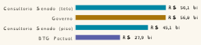
| 1 | Lei Kandir: manter R$ 4 bi/ano |
| 2 | Sem teto de R$ 3 bi nas compensações |
| 3 | Liberar créditos tributários |
| 4 | Gasto real de 0,6% em certos anos |
O 17 de novembro lembra os bebês nascidos antes de 37 semanas. O lilás é a cor da campanha.
Até R$ 10,5 bi em subsídios ao diesel ficariam fora da meta de 2026, e o Congresso teria 120 dias para analisar a regra dos supersalários.
Governo e oposição aparecem com as próprias propostas, atribuídas. O jornal não toma partido.
O fenômeno. A anomalia no Pacífico chegou a 2,4–2,5 °C em 9/11, faixa de El Niño "muito forte". O diretor técnico da Funceme, Francisco Vasconcelos Júnior, prevê o pico entre o fim de novembro e o início de dezembro e perda gradual de força depois disso, com efeitos que podem durar meses.
Quadra chuvosa. Olhando só para o Pacífico, o cenário para 2027 é desfavorável. A temperatura do Atlântico pode atenuar ou piorar o quadro. A previsão regional detalhada sai em janeiro. Um boletim federal de outubro dá maior chance de chuva abaixo da média no Nordeste até janeiro.
Reservatórios. O Castanhão está com 28% a 29%, contra cerca de 5% no El Niño de 2015–16; o Orós, perto de 70%, contra cerca de 10%. Crateús, Iracema, Choró e Itatira são acompanhados de perto. O governo estuda adutoras em Mulungu, Aratuba, Itatira e Crateús e a compra de perfuratrizes para poços.
Educação. A Assembleia aprovou em 12/11 a prorrogação do Plano Estadual de Educação até 31/12/2027, a terceira desde 2016. O texto segue para sanção; a Conferência Estadual de Educação, em 18/12, deve definir o novo plano.
Contexto Prefeitas. O Ceará tem 41 prefeitas em 184 municípios (22,2%), o 5º maior índice do país, segundo a MUNIC 2025 do IBGE, divulgada em 11/11.
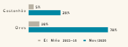
| Hoje | Sem fato novo de Sobral confirmado em 24 h |
| Sex 20 | Feriado nacional da Consciência Negra |
| Sáb 21 | Criciúma × Fortaleza, ida do acesso (p.13) |
Caixa d'água tampada, vazamento consertado e banho curto: o hábito vale mais do que esperar o decreto de racionamento.
Novembro costuma ter picos acima de 40 °C no interior. Garrafa d'água no bolso do jaleco e pausa para beber a cada evolução.
Câmbio. O dólar comercial fechou a R$ 5,7767 (+2,15%), depois de bater R$ 5,79 na máxima. No ano, sobe 5,25%. O euro foi a R$ 6,36. Segundo analistas ouvidos pela imprensa, o mercado duvida que o pacote contenha a alta de despesas; o impacto estimado em 2027 é de R$ 56 bi a R$ 60 bi.
Bolsa. O Ibovespa terminou em 169.295 pontos, com volume de R$ 17 bilhões. Vale recuou 4,41%, Petrobras PN 2,83% e Itaú PN 2,29%. Em Nova York, o Dow Jones caiu 1,41% e a Nasdaq, 2,49%.
Atividade. O IBC-Br, a "prévia do PIB" do Banco Central, caiu 0,2% em setembro, um pouco melhor que a queda de 0,29% esperada. No 3º trimestre, recuou 0,9%: agropecuária −2,0%, indústria −1,1% e serviços −0,5%. Em 12 meses, ainda sobe 1,4%.
Focus. O mercado cortou o IPCA de 2026 para 5,11% e subiu o de 2027 para 5,00%. A Selic de fim de 2026 segue em 13,75%; a de 2027 foi a 12,75%. PIB de 2026: 1,72%. Dólar no fim do ano: R$ 5,40.
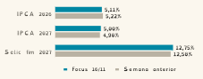
Dólar subindo 2% num dia atrai "oportunidades" por WhatsApp: câmbio, cripto e "proteção em dólar" com retorno garantido. Retorno garantido alto é sinal de golpe. Viagem ao exterior? Compre aos poucos, sem pressa. Regra das 72 h para qualquer decisão. Isto não é recomendação de investimento.
| Ter 17 | Senado vota destaques do pacote fiscal |
| Ter 17 | Trump na Asean, em Manila |
| Semana | Balanço da Nvidia |
| Sex 20 | Feriado nacional, sem pregão |
O comercial é o das grandes operações (R$ 5,78). O turismo, da casa de câmbio, custa mais: saiu a R$ 5,88 na venda. A Ptax é a média do BC usada em contratos.
Um trimestre de queda no IBC-Br não é recessão técnica, que exige dois seguidos no PIB oficial do IBGE. O PIB do 3º tri sai no início de dezembro.
Ormuz. Em comunicado, a Guarda Revolucionária (IRGC) disse que seis petroleiros atingiram minas na rota sul do estreito, que o Irã chama de "não autorizada", com explosões e incêndios. A força apresenta a ação como resposta ao bloqueio naval dos EUA. A agência britânica UKMTO relatou um petroleiro atingido por projétil na saída do estreito, sem vítimas. O Bahrein informou ter interceptado drones lançados contra um radar americano.
Ucrânia. Ataques russos mataram ao menos três pessoas em Kherson, Dnipro e Zaporizhia, segundo governos regionais. Moscou disse ter interceptado 1.336 drones ucranianos numa noite. Conversas mediadas pelos EUA nos Emirados renderam troca de prisioneiros, sem trégua. A chefe da diplomacia da UE, Kaja Kallas, disse que um cessar-fogo deve vir primeiro; a UE aprovou repasse de cerca de € 8 bilhões a Kiev e sancionou quase 50 bancos.
Ásia. Trump chega hoje a Manila para a 49ª cúpula da Asean, com foco em comércio. Em seguida vai a Shenzhen, na China, para a APEC (18–19), com encontros previstos com Xi Jinping. América Latina: a Guatemala decretou estado de emergência de 30 dias em Zacapa e Izabal após a morte de um deputado; no Equador, o presidente Noboa nega haver base militar dos EUA no país.
| Ter 17 | Trump na Asean, em Manila |
| Ter 17 | Senado vota destaques do pacote fiscal |
| 18–19 | APEC em Shenzhen |
| Até 31/1 | Alertas da EASA a voos no Oriente Médio |
As Filipinas são um arquipélago de mais de 7 mil ilhas. Pelo Mar do Sul da China, disputado por vários países, passa parte grande do comércio marítimo mundial.
IRGC: Guarda Revolucionária, força militar de elite do Irã. UKMTO: centro britânico que monitora a navegação na região. Asean: bloco de 11 países do Sudeste Asiático.
"Seis navios", diz um lado; sem confirmação independente, o número é alegação. Guarde quem afirma, quando e com que prova.
Respostas: Tratado de Petrópolis · Lunokhod 1 · Dia Internacional dos Estudantes.
Dia Mundial da Prematuridade (p.7) · Dia Internacional dos Estudantes · Novembro Azul e Novembro Roxo seguem até o fim do mês.
O estopim de 1939 foi a morte de Jan Opletal, estudante de medicina baleado num protesto em Praga. Seu enterro virou nova manifestação e motivou a repressão de 17/11.
No Tratado de Petrópolis, negociado pelo Barão do Rio Branco, o Brasil pagou 2 milhões de libras e prometeu a ferrovia Madeira-Mamoré.
Prematuridade. É o parto antes de 37 semanas. Nas Américas, cerca de 1,2 milhão de bebês nascem prematuros por ano, quase 1 em 10, segundo a OPAS; as complicações do parto prematuro são a principal causa de morte neonatal. A data foi criada por associações de pais em 2008. O roxo do mês lembra três pontos com evidência: pré-natal precoce, corticoide antenatal quando indicado e método canguru.
OPTIMAL-STROKE. Coordenado pelo Hospital Israelita Albert Einstein em 30 centros brasileiros, randomizou 4.368 pessoas com AVC isquêmico ou AIT prévio para alvo sistólico < 120 ou < 140 mmHg, com seguimento mediano de 3,9 anos. Eventos cardiovasculares graves caíram de 13,5% para 10,9% (HR 0,79; IC 95% 0,67–0,94); novos AVCs, de 6,4% para 4,7%. O preço: mais desfecho renal (3,9% × 2,2%). Saiu no NEJM, com apresentação no congresso da AHA, em Chicago.
Antimicrobianos. De 18 a 24/11, a OMS e parceiros fazem a semana com o lema "Uma só saúde, uma só ação: prevenir a RAM agora", primeira campanha sob o novo Plano Global de Ação 2026–2036.
72 h OMS. Nos dias 18 e 19, os sete candidatos à sucessão de Tedros apresentam propostas; a votação final é na Assembleia Mundial da Saúde de maio de 2027.
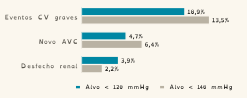
O pelacarsen baixou a Lp(a) em cerca de 78%, mas não reduziu infarto nem AVC (Lp(a)HORIZON). O ziltivekimab reduziu a inflamação e também não trouxe benefício (ZEUS). Marcador melhor não é paciente melhor.
12/11 A Anvisa suspendeu a venda e o uso de um lote do insumo tirzepatida, por armazenamento inadequado, e de todos os lotes de retatrutida de uma distribuidora, porque esse fármaco ainda é experimental e não tem registro em nenhum país. Os insumos iriam para farmácias de manipulação. ✅ Caneta só com registro e receita. 🔴 "Manipulado é igual ao original" não vale para peptídeos sem estudo.
| Passo | O que fazer | ⚠️ Pegadinha de prova |
|---|---|---|
| 1. pH | < 7,35 = acidemia · > 7,45 = alcalemia. Depois, quem explica o pH: PaCO₂ (respiratório) ou HCO₃⁻ (metabólico)? | pH normal não exclui distúrbio: pode ser misto. |
| 2. Compensação | Metabólica: Winter, PaCO₂ = 1,5 × HCO₃⁻ + 8 ± 2; na alcalose, PaCO₂ sobe 0,7 por 1 de HCO₃⁻. Respiratória: a cada 10 de PaCO₂, HCO₃⁻ sobe 1 (aguda) ou 3,5–4 (crônica); na alcalose, cai 2 ou 4–5. | Fora do esperado = 2º distúrbio. A compensação nunca corrige o pH por completo. |
| 3. Ânion gap | AG = Na⁺ − (Cl⁻ + HCO₃⁻). Some 2,5 para cada 1 g/dL de albumina abaixo de 4. AG alto: lactato, cetoácidos, uremia, tóxicos (metanol, etilenoglicol, salicilato). | Hipoalbuminemia "esconde" o AG alto do crítico. |
| 4. Delta-delta | ΔAG ÷ ΔHCO₃⁻: < 1 sugere acidose hiperclorêmica associada; > 2, alcalose metabólica associada. | Soro fisiológico em excesso cria acidose hiperclorêmica. |
| 5. Bicarbonato? | Trate a causa. Com pH ≤ 7,20 e LRA KDIGO 2–3, o bicarbonato pode ser considerado para poupar diálise. Cetoacidose: só se pH < 7,0 (nº 008). | Bicarbonato não trata acidose respiratória: quem trata é a ventilação. |
Conteúdo educativo. Siga o protocolo institucional.
Mulher de 70 anos, DPOC, piora da falta de ar há 3 dias. pH 7,28, PaCO₂ 70, HCO₃⁻ 32. Esperado: aguda ≈ 27; crônica ≈ 34–35.
Leitura: HCO₃⁻ entre os dois = acidose respiratória crônica agudizada. Conduta: O₂ com alvo de 88–92%, broncodilatador, corticoide (p.9) e VNI, porque o pH está ≤ 7,35 (p.10).
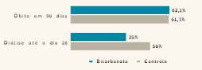
389 pacientes com pH ≤ 7,20: desfecho composto sem diferença. No subgrupo com LRA, óbito em 28 dias de 46% × 63%; era hipótese, e o BICARICU-2 não confirmou.
No DPOC retentor, baixar a PaCO₂ rápido demais no ventilador deixa o HCO₃⁻ alto sem oposição: alcalemia, arritmia e convulsão. Mire a PaCO₂ de base.
| Passo | O que fazer | ⚠️ Pegadinha de prova |
|---|---|---|
| 1. Definir | Piora da dispneia e/ou da tosse com escarro em até 14 dias. Grave: acidose respiratória (pH < 7,35 e PaCO₂ > 45). Peça RX, ECG, gasometria e hemograma. | TEP e IC descompensada imitam exacerbação. |
| 2. Oxigênio | Titule para SpO₂ 88–92% e repita a gasometria. | O₂ em excesso no retentor eleva a PaCO₂. |
| 3. Broncodilatar | β2 de curta ação, com ou sem anticolinérgico de curta ação, por inalador com espaçador ou nebulização. | Metilxantinas não são recomendadas (efeitos adversos). |
| 4. Corticoide | Prednisona 40 mg/dia por 5 dias (ou equivalente). Encurta a recuperação e melhora a função pulmonar. | 14 dias não é melhor que 5 (REDUCE). |
| 5. Antibiótico | Se escarro purulento + aumento da dispneia ou do volume do escarro, ou se precisar de ventilação. Duração de 5–7 dias; escolha pelo perfil local. | Escarro purulento é o sinal que mais pesa. |
Conteúdo educativo. Siga o protocolo institucional.
Homem de 68 anos, DPOC, 3 dias de piora da dispneia e escarro esverdeado. FR 26, SpO₂ 84% em ar ambiente, pH 7,31, PaCO₂ 58.
Conduta: O₂ titulado para 88–92%, β2 + anticolinérgico, prednisona 40 mg por 5 dias, antibiótico (purulência + dispneia) e VNI (p.10). POCUS com perfil A e sem TVP reforça DPOC (p.10).
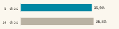
Técnica inalatória revisada, manutenção com broncodilatador de longa ação, reabilitação pulmonar precoce, vacinas em dia e plano para parar de fumar. Retorno em poucas semanas.
Dia Mundial da DPOC, na 3ª quarta-feira de novembro, promovido pela GOLD. Bom gancho para revisar espirometria: VEF₁/CVF < 0,70 após broncodilatador.
Olhe a face anterior do tórax e classifique. Perfil B (linhas B difusas com deslizamento): edema pulmonar. Perfil A (linhas A com deslizamento): procure TVP; com TVP, pense em TEP; sem TVP e sem consolidação posterior, DPOC ou asma. A' com ponto pulmonar: pneumotórax. Perfil A/B, B' ou consolidação: pneumonia. No estudo original, 260 pacientes, acerto de 90,5%.
⚠️ Pegadinha: perfil A não confirma DPOC sozinho; sem o exame das veias e do ponto posterolateral, o TEP e a pneumonia passam despercebidos.
Sequência clássica conforme o potássio sobe: T alta, estreita e simétrica; depois PR longo e P achatada até sumir; QRS largo; por fim, padrão senoidal, que precede FV ou assistolia. Bradicardia e bloqueios também aparecem. A acidose desloca potássio para fora da célula: gancho com a p.8.
⚠️ Pegadinha: o ECG pode ser normal com potássio muito alto. ECG normal não descarta; alteração no ECG pede cálcio IV já, conforme o protocolo.
A diretriz ERS/ATS de 2017 recomenda VNI com dois níveis na DPOC exacerbada com acidose respiratória (pH ≤ 7,35) e CPAP ou dois níveis no edema agudo cardiogênico. Sugere no imunossuprimido, no pós-operatório e na prevenção de falha pós-extubação em alto risco. Na hipercapnia sem acidose, não. Comece com IPAP baixa e EPAP 3–5, suba a IPAP em minutos conforme a tolerância e repita a gasometria em 1–2 h. Piorou ou não melhorou: intube sem atraso.
Perfil A com TVP? Pense em TEP.
ECG normal descarta hipercalemia? Não.
Hipercapnia com pH normal? VNI não indicada.
Nvidia. O trimestre terminou em 25 de outubro. A própria empresa projetou receita de US$ 108 bilhões, com margem de 2% para cima ou para baixo, sem vender chips de data center para a China. O consenso de analistas compilado pela Oanda fica entre US$ 108,8 e 109 bilhões, com lucro ajustado de cerca de US$ 2,47 por ação: crescimento perto de 90% em um ano. A margem bruta prevista é de 74%. Os analistas vão olhar a rampa da nova plataforma Vera Rubin, apontada como fator de pressão sobre a rentabilidade, e a oferta apertada de memória. É o primeiro balanço sob a CEO interina Colette Kress.
Microsoft Ignite. A conferência vai de hoje a sexta (20), em San Francisco. A palestra de abertura é às 10h no horário do Pacífico, 15h em Brasília. A empresa ainda não publicou os anúncios; a agenda de sessões aponta agentes de IA, governança de custos e o Copilot.
Anthropic. Segundo a Bloomberg, os pedidos chegaram a cerca de seis vezes o lote de 825 milhões de ações na faixa de US$ 70 a US$ 78. O preço sai na quarta (18) e a estreia na Nasdaq, com o código ANT, está prevista para quinta (19).
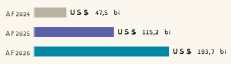
| Ter 17 | Nvidia (noite) · Ignite |
| Qua 18 | Preço da Anthropic |
| Qui 19 | ANT na Nasdaq · GTA VI |
É a previsão que a empresa divulga para o trimestre seguinte. O mercado costuma reagir mais a ela do que ao resultado que já passou.
Balanço após o fechamento mexe no "after-market", com pouca liquidez. Oscilação da noite não é o preço do dia seguinte. Regra das 72 h; isto não é recomendação.
Seleção, hoje. Brasil e Singapura jogam às 7h de Brasília, no Estádio Nacional, em Kallang, no último jogo do ano. É o primeiro duelo entre as seleções. No sábado (14), o Japão venceu por 3 a 2. Na véspera daquele jogo, Ancelotti disse que a fase de testes termina nesta Data FIFA e que o foco passa a ser a Copa América de 2028.
Fla × Athletico-PR. Quarta (18), 20h30, no Maracanã, com arbitragem de Rafael Rodrigo Klein (RS) e VAR de Caio Max Augusto Vieira (GO). O técnico Leonardo Jardim não pretende poupar ninguém, segundo o Diário do Rio.
A conta. Com 76 pontos, o Flamengo é campeão sem depender de ninguém se vencer o Athletico e mais dois dos três jogos restantes (Palmeiras, Coritiba e Chapecoense). Vencendo quarta e sábado, a taça fica garantida. Seria o 9º Brasileirão do clube.
Pendurados. Léo Pereira, Alex Sandro, Pulgar, Arrascaeta, Pedro, Vitão, Bruno Henrique e Luiz Araújo têm dois amarelos: um cartão na quarta tira o jogador do sábado (21), às 16h30, no Nubank Parque.
Palmeiras. Com 73, visita o Cruzeiro (60) na quarta, às 20h30. Vagas: Cruzeiro e Fluminense (57) fecham o G4; Athletico-PR (54) e Bahia (53) perseguem. Degola: Chapecoense (21) já caiu; Remo (29) depende de quase tudo; Corinthians e Grêmio (37) estão a um ponto de Vitória e Internacional (38).
| 1 Flamengo | 76 | 11 Vasco | 44 |
| 2 Palmeiras | 73 | 12 Botafogo | 42 |
| 3 Cruzeiro | 60 | 13 Coritiba | 42 |
| 4 Fluminense | 57 | 14 Mirassol* | 41 |
| 5 Athletico-PR | 54 | 15 Vitória | 38 |
| 6 Bahia | 53 | 16 Internacional | 38 |
| 7 Atlético-MG* | 51 | 17 Corinthians | 37 |
| 8 Bragantino | 47 | 18 Grêmio | 37 |
| 9 Santos | 47 | 19 Remo | 29 |
| 10 São Paulo | 44 | 20 Chapecoense | 21 |
* 35 jogos (0 × 0 na abertura da rodada). 17º a 20º caem.
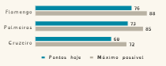
Qua 18: Coritiba × Santos (19h30) · Remo × Chapecoense (20h) · Cruzeiro × Palmeiras e Fla × Athletico-PR (20h30) · Corinthians × Botafogo e Grêmio × Bahia (21h30). Qui 19: Vasco × Inter e Vitória × Bragantino (19h30) · São Paulo × Fluminense (21h30).
Sáb 21: Atlético-MG × Boca Juniors, Sul-Americana, em Barranquilla. Sáb 28, 17h: Palmeiras × Estudiantes, Libertadores, em Montevidéu. Os ingressos da venda geral esgotaram em 20 minutos.
8 pendurados no Flamengo. Um amarelo amanhã e o jogador assiste de fora ao confronto direto de sábado, em São Paulo.
Fortaleza. Quarto colocado da Série B, com 65 pontos, o Leão joga a ida em 21/11, no Heriberto Hülse, e a volta em 28/11, no Castelão. Não há pênaltis: com a melhor campanha, o Fortaleza sobe com dois resultados iguais. A outra chave é Atlético-GO × Vila Nova. Os horários ainda não foram divulgados.
Ceará. Livre da queda após o 1 a 1 com o CRB, o Vovô planeja 2027 com a folha salarial 45% menor, segundo O Povo, e com Daniel Paulista no comando. O clube avalia elenco e contratos para a nova realidade financeira.
Cearense 2027. A FCF mudou o formato: 10 clubes em turno único, 9 jogos cada, de 5 de janeiro a 7 de março. Os quatro primeiros vão às semifinais, em jogo único; a final tem ida e volta. Os dois últimos caem. O Clássico-Rei é em 31/1, no Castelão.
Quem joga. Fortaleza, Ceará, Ferroviário, Floresta, Iguatu, Horizonte, Maranguape, Maracanã e os promovidos Itapipoca e Icasa. A estreia, em 5/1, tem Ferroviário × Floresta no PV e Ceará × Horizonte no Domingão; o Fortaleza recebe o Itapipoca no dia 6.
Sobral. O Guarany terminou a Série B estadual de 2026 em 5º e segue na divisão. O Vila Real foi vice da Série C e também estará na Série B de 2027, o que garante o clássico sobralense no Junco. Na Taça Fares Lopes, o Vila Real liderava o Grupo B em 9/11.
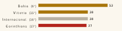
| Qua 18 | Grêmio × Bahia, 21h30 |
| Qui 19 | Vitória × Bragantino, 19h30 |
| Sáb 21 | Criciúma × Fortaleza (ida) |
| Sáb 28 | Fortaleza × Criciúma, Castelão |
| Ter 5/1 | Começa o Cearense 2027 |
Sobem à Série A: Itapipoca (campeão da B) e Icasa. Caem: Quixadá e Tirol. Sobem à B: Acopiara (campeão da C) e Vila Real. Caem à C: Caucaia e Barbalha.
Dez clubes: Quixadá, Tirol, Crato, Crateús, Guarany de Sobral, Cariri, Guarani de Juazeiro, Atlético Cearense, Acopiara e Vila Real.
Iguatu, Horizonte, Maranguape, Itapipoca e Icasa somam cinco clubes de fora de Fortaleza na Série A estadual de 2027.
Com Guarany e Vila Real na mesma divisão, o Junco, com capacidade para cerca de 15 mil pessoas, volta a ter clássico local oficial em 2027.
Liga das Nações. Na 5ª rodada (12 a 14/11), a Inglaterra bateu a Croácia por 2 a 1, com gol da vitória de Harry Kane, e a Itália virou sobre a França por 3 a 1, em Milão. A Espanha venceu a Tchéquia (2 a 0), a Alemanha de Jürgen Klopp ganhou da Sérvia (3 a 1), a Dinamarca goleou Portugal em Braga (4 a 1) e a Holanda fez 7 a 0 na Grécia. Inglaterra e Portugal já estão nas quartas.
Domingo e segunda. Na 6ª rodada, a Inglaterra venceu a Espanha por 3 a 2, fora de casa, segundo a ESPN; as fontes divergem sobre os autores dos gols. Também jogaram Bélgica × Itália, França × Turquia e, na segunda (16), Alemanha × Holanda. Hoje (17) fecham a fase Dinamarca × Noruega e País de Gales × Portugal.
F1. Em Interlagos (8/11), Lando Norris venceu na chuva; Verstappen foi 2º, Hadjar 3º e o campeão Kimi Antonelli, 5º. Os brasileiros ficaram longe dos pontos: Gabriel Bortoleto (Audi) em 16º e Rafael Câmara (Haas) em 20º. A Mercedes levou o título de construtores. Las Vegas abre a reta final; depois, Catar (29/11) e Abu Dhabi (6/12). Em 25/11, a FIA julga o recurso da Audi sobre Monza.
MotoGP e tênis. Marc Márquez chega a Portimão (20 a 22/11) com 431 pontos, 60 à frente de Jorge Martín, e pode fechar o 8º título na categoria principal. Em Turim, o ATP Finals vai até domingo (22), sem o lesionado Jannik Sinner; Alcaraz estreou com 6/2 6/2 sobre Tiafoe. Semifinais no sábado (21).
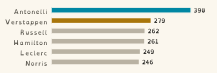
| Qui 19 | TL1 · 21h30 |
| Sex 20 | TL2 · 1h · TL3 · 21h30 |
| Sáb 21 | Classificação · 1h |
| Dom 22 | Corrida · 1h |
Lendl: Alcaraz, Medvedev, Cobolli e Tiafoe. McEnroe: Zverev (nº 1), Shelton, Fils e Jódar.
Sáb 21: Atlético-MG × Boca Juniors, Sul-Americana, em Barranquilla. Sáb 28, 17h: Palmeiras × Estudiantes, Libertadores, em Montevidéu.
111 pontos separam o campeão Antonelli do 2º colocado, Verstappen, com três GPs por fazer.
Corrida à 1h de domingo e plantão cedo? Veja o compacto depois: sono também é estratégia.
Seleção. O técnico Arthur Elias convocou o grupo para os últimos amistosos do ano, contra o Japão: domingo, 29/11, em Hiroshima, e sábado, 5/12, em Okayama. Kerolin está fora por lesão no pé, sofrida no Campeonato Espanhol. Marta não foi chamada; segundo o técnico, segue nos planos para a Copa do Mundo de 2027, no Brasil. As fontes divergem sobre o total de convocadas (26 no texto, 24 na lista publicada).
O ano das mulheres. O São Paulo ganhou o Brasileirão A1 pela primeira vez, ao empatar por 1 a 1 com o Corinthians na volta da final, com recorde de público. Em 31/10, o Cruzeiro levou a Libertadores nos pênaltis. No domingo (15), o Inter ficou com a Copa do Brasil (4 a 1 no agregado sobre o Flamengo). Inter e São Paulo fazem a Supercopa de 2027.
Vôlei. Na 3ª rodada da Superliga Masculina (11/11), o Norde Vôlei, do Ceará, perdeu para o Cruzeiro por 3 a 0, em casa. Também venceram Minas (3 a 2 no Monte Carmelo), Vôlei Renata (3 a 0 no Sesi Bauru), São José (3 a 1 no Montes Claros), Praia Clube (3 a 0 no Goiás) e Suzano (3 a 0 no Guarulhos). Na Superliga Feminina, o Sesc RJ Flamengo abriu a temporada com vitórias sem perder sets.
Basquete. No NBB 2026/27, o Minas Storm é o único invicto, com seis vitórias até 12/11; Mogi, Flamengo e Sesi Franca aparecem entre os favoritos. A NBA começou a temporada 2026-27 em outubro com dois brasileiros em destaque.
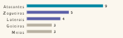
| Brasileirão A1 | São Paulo (inédito) |
| Libertadores | Cruzeiro (inédito) |
| Copa do Brasil | Inter (inédito) |
| WTA Finals | Mirra Andreeva |
O Norde chegou à elite masculina depois de decidir a Superliga B contra o Montes Claros.
O texto da convocação fala em 26 atletas; a lista tem 24. O jornal publica o que pode ser contado.
3 títulos inéditos no futebol feminino brasileiro em 2026, um em cada grande competição.
Amistoso de madrugada no Japão? Gravar e ver juntos no café da manhã também conta.
Leônidas. A Organização Internacional de Meteoros prevê o máximo para hoje, às 23h45 UTC, 20h45 em Brasília. A taxa teórica é de uns 15 meteoros por hora com céu escuro e o radiante no alto; na prática, vê-se menos. A Lua, crescente e meio iluminada, atrapalha os mais fracos. O radiante fica na constelação de Leão, que sobe depois da meia-noite: a melhor janela é de madrugada, longe das luzes da cidade, até o clarear.
De onde vêm. São grãos deixados pelo cometa Tempel-Tuttle, que passa a cada 33 anos. Quando a Terra cruza um rastro denso, há "tempestades", como as de 1966 e 2001. Não é o caso deste ano.
GTA VI. Fica jogável à meia-noite local de quinta (19), só em PS5 e Xbox Series. O pré-download pede até 212 GB livres. Não há versão para PC no lançamento.
Lunokhod 1, 56. Em 17/11/1970, a sonda soviética Luna 17 pousou no Mar das Chuvas e soltou o Lunokhod 1, primeiro veículo controlado à distância a rodar em outro mundo. Operou por cerca de dez meses, guiado da Terra com atraso de alguns segundos.
| Hoje | Pico das Leônidas |
| Qui 19 | GTA VI · ANT na bolsa |
| Dom 22 | F1 em Las Vegas |
| Sex 27 | Black Friday |
Jogo novo e noite livre são combinação perigosa para o sono. Combine antes o ponto de saída: "duas missões" ou "até 23h", com alarme.
Radiante: ponto do céu de onde os meteoros de uma chuva parecem sair. Dá o nome a ela: Leônidas, de Leão.
Em 1869, o Canal de Suez foi inaugurado, ligando o Mediterrâneo ao Mar Vermelho sem a volta pela África.
Os grãos das Leônidas entram na atmosfera a cerca de 71 km/s, entre os mais rápidos do ano. A maioria tem o tamanho de um grão de areia.
Na internet de 100 Mbit/s, o pré-download leva umas 5 horas. Deixe baixando de madrugada e o console em modo de repouso.
Os números. De janeiro a outubro foram emplacados 4.722.650 veículos, somando carros, comerciais leves, motos, caminhões, ônibus e implementos, alta de 12,62% sobre 2025. Só outubro teve 489.119. A federação dos distribuidores atribuiu parte da perda de ritmo no mês ao calendário: 21 dias úteis, contra 23 um ano antes. A previsão anterior para o ano era de alta de 8,6%.
Elétrico de entrada. A BAIC lançou no fim de outubro o hatch elétrico Arcfox T1, por R$ 129.900 na versão Pro e R$ 139.900 na Max, em preço promocional até 31/12 ou fim do estoque. A bateria é de fosfato de ferro-lítio, de 42,3 kWh, com 283 km de autonomia no padrão Inmetro e motor de 95 cv.
Niagara. A pré-venda da picape da Renault vai até domingo (22), e as lojas recebem o modelo na segunda (23). O preço de lançamento vale para as primeiras reservas: pergunte se ainda há.
Entrada a combustão. O Fiat Mobi segue como o zero mais barato de novembro, a R$ 72.490.
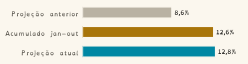
| R$ 129,9 mil | versão Pro |
| 283 km | autonomia Inmetro |
| 42,3 kWh | bateria LFP |
| 95 cv | potência |
Recall: consulte o chassi no site da montadora ou no app da Carteira Digital de Trânsito.
Pneus e estepe calibrados a frio; palhetas e luzes conferidas.
Saia descansado: depois do plantão, durma antes da estrada.
| Golpe da semana | Como funciona | Defesa |
|---|---|---|
| QR Code falso ("quishing") | Adesivo colado sobre o código de feira, bar ou boleto; o Pix cai em outra conta. | No app do banco, confira nome do recebedor e valor antes de confirmar. |
| Falso advogado | Mensagem com "alvará" em PDF e assinatura forjada pedindo taxa para liberar valor de processo. | Ligue para o escritório pelo número que você já tem. Justiça não cobra taxa por WhatsApp. |
| Central 0800 falsa | SMS de "compra suspeita no cartão" com um 0800 para você ligar. | Ligue só para o número do verso do cartão ou use o app. |
| "Metade do dobro" | Preço inflado antes da data para anunciar 50% depois. | Anote hoje o preço e compare em 27/11. |
| Comprovante falso de Pix | Comprador mostra tela editada e leva o produto. | Entregue só depois de ver o crédito no seu extrato. |
72 h Campanhas anunciadas no início do mês; confira sempre no app oficial.
CNPJ no rodapé, endereço físico, canal de atendimento e reputação em site de reclamações. Na dúvida, compre pelo app, nunca por link de mensagem.
Pela regra do Pix em vigor desde 2024, aparelho não cadastrado tem limite de R$ 200 por operação e R$ 1 mil por dia. É uma trava a seu favor.
Bloqueie o cartão pelo app, avise o banco na hora, peça a devolução do Pix pelo mecanismo do Banco Central e registre boletim de ocorrência.
Idosos são alvo preferido do falso advogado e da falsa central. Combine uma palavra-código com a família.
Print do anúncio, nota fiscal e conversa com a loja. É sua prova se o produto não chegar.
| Item | Veredito | Por quê |
|---|---|---|
| Celular "preço de Black" antes do dia 27 | ⏳ Esperar a data | Anote o preço hoje e compare em 27/11 em dois sites oficiais, com frete. |
| PC com Windows 10 em oferta | 🔴 Evite | O Windows 10 está fora do suporte gratuito; o ESU doméstico acabou em outubro. Prefira máquina compatível com o Windows 11. |
| Notebook "gamer" para o GTA VI | ⏳ Espere | O jogo sai só para PS5 e Xbox. Não existe versão de PC anunciada. |
| Ação de empresa famosa oferecida por mensagem | 🔴 Golpe | Ninguém sério vende ação por WhatsApp. Corretora autorizada é conferida no site da CVM. |
| "50% off" sem histórico | ⏳ Checar 90 dias | Pode ser a "metade do dobro". Sem preço de referência, não há desconto. |
Cansaço e sono curto aumentam a impulsividade. Deixe o carrinho salvo e decida depois de dormir.
Ative a instalação automática no celular, no PC e no Office. Brecha aberta é porta para golpe.
Versão de teste pode travar app de banco ou de prescrição. Espere a versão final.
Compra pela internet tem 7 dias para arrependimento (CDC, art. 49).
O calendário. Pela Lei 4.749/1965, a 1ª parcela do 13º deve ser paga até 30 de novembro e a 2ª, com os descontos de INSS e IR, até 20 de dezembro. É o maior dinheiro extra do ano para quem tem carteira assinada.
O que a doutrina diz. No método Bastter, patrimônio se acumula com aportes regulares, e a renda do trabalho é a renda que de fato sustenta a vida. Dinheiro extra segue a mesma lógica: entra no plano como aporte, sem virar consumo por impulso. O manual também insiste em não tentar adivinhar a hora certa de entrar ou sair.
Antes de aplicar. Dívida cara vem primeiro: nenhuma aplicação conservadora rende o que cobram o rotativo do cartão ou o cheque especial. Depois, a reserva de emergência com liquidez diária. Só então o objetivo de longo prazo.
O cupom de ontem. Em 16/11, o Tesouro pagou o cupom semestral do IPCA+ com Juros Semestrais: cerca de R$ 141 brutos por título, segundo estimativa da Rankia (13/11). Sobre R$ 10 mil no título 2037, o cupom bruto estimado é de R$ 321,14, e o IR é retido a cada pagamento. Por isso o manual Bastter desaconselha títulos com juros semestrais: o imposto antecipado deixa menos dinheiro rendendo no fim.
Os números de hoje. O Copom manteve a Selic em 13,75% em 4/11 e volta a se reunir em 8 e 9 de dezembro; a mediana do Focus de 16/11 aponta manutenção, segundo o ValorFinal. Com a Selic acima de 8,5%, a poupança segue em 0,5% ao mês mais TR: rendeu 0,66% em novembro para aniversário no dia 1º e cai para cerca de 0,62% em dezembro, pela TR menor.
Taxas de referência. Em 10/11, o Tesouro Prefixado 2029 pagava 14,59% ao ano; o IPCA+ 2032, IPCA + 7,71%; e o Tesouro Selic 2031, Selic + 0,1072%, segundo o InvestNews. Taxas mudam todo dia útil: confira no site oficial antes de qualquer decisão.
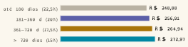
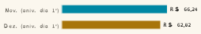
| IR | Regressivo: 22,5% (até 180 dias), 20%, 17,5% e 15% (acima de 720 dias). |
| FGC | Até R$ 250 mil por CPF por instituição; teto de R$ 1 milhão a cada 4 anos. Não cobre Tesouro, que tem garantia do Tesouro Nacional. |
| Poupança | Isenta de IR para pessoa física. |
1. Quitar dívida cara. 2. Completar a reserva de emergência. 3. Contas de janeiro: IPVA, IPTU, material escolar. 4. O resto vira aporte do plano de longo prazo.
Trabalhe bem, gaste menos do que ganha, aporte sempre e não tente acertar a hora: o tempo faz o resto.
O 13º atrai ofertas "só hoje" e a Black Friday chega em 27/11. Antes de gastar ou aplicar, espere três dias e converse com alguém de confiança.
Imóvel na planta. A Lei 13.786/2018 regula o distrato. Se o comprador desistir, a incorporadora pode reter até 25% do valor pago; se o empreendimento tiver patrimônio de afetação, até 50%, além da corretagem. Sem afetação, a devolução sai em até 180 dias; com afetação, até 30 dias após o habite-se. Compra feita em estande fora da sede tem 7 dias para arrependimento.
Terreno. Em loteamento, confira se ele está registrado no cartório e aprovado pela prefeitura: vender lote de loteamento irregular é proibido (Lei 6.766/1979). Dono é quem registra a escritura (Código Civil, art. 1.245).
Veículo no feirão. Carro é consumo: perde valor e cobra seguro, IPVA, manutenção e combustível. Desconto na vitrine não é o preço final. Compare o Custo Efetivo Total (CET) do financiamento, que soma juros, tarifas e seguros, e some ao preço tudo o que vem depois.
Revenda. Comprar na promoção para revender com lucro é comércio. O MEI fatura até R$ 81 mil em 2026 e paga R$ 81,05 ao INSS por mês, mais R$ 1 de ICMS ou R$ 5 de ISS. Quem compra pela internet tem 7 dias para desistir (CDC, art. 49), e o revendedor responde pela garantia. Produto muito abaixo do preço de mercado pode ser de origem ilícita: comprá-lo é receptação (Código Penal, art. 180).
Pix, 6 anos. O sistema, lançado em 16/11/2020, bateu recorde de 319,7 milhões de transações num só dia, segundo o A Crítica (13/11). A consultoria FTI Consulting lista sete erros comuns, ao lado. Se cair num golpe, avise o banco na hora: o Mecanismo Especial de Devolução (MED) pode ser acionado, mas não garante a recuperação.
Black Friday. O Itaú alertou em 8/11 para lojas falsas, QR Codes adulterados, maquininhas com tela danificada e pedidos de código. A data deve movimentar R$ 13,3 bilhões no comércio on-line entre 26 e 29/11, segundo a Confi/Neotrust.
Fonte: FTI Consulting, via A Crítica (13/11).
Registre hoje o preço do que quer comprar · digite o endereço da loja, sem clicar em link · confira CNPJ e reputação no consumidor.gov.br · prefira cartão virtual temporário · nunca faça Pix para "cancelar" compra ou "liberar" entrega.
Urgência, escassez, autoridade e afeto. Antídoto: 72 horas e uma pessoa de confiança antes de qualquer Pix ou assinatura.
Registro da incorporação · patrimônio de afetação · prazo de entrega e tolerância de 180 dias · índice de correção · cláusula de distrato em quadro-resumo.
Preço à vista · CET por escrito · seguro e IPVA do ano · valor de revenda em 3 anos · nada de assinar no mesmo dia.
O jornal não é advogado nem consultor. Em compra relevante: advogado, contador, corretor com Creci e o Procon em caso de dúvida.
O Senado aprovou o texto-base do projeto de ajuste fiscal por 45 a 31 na noite de 12/11; os destaques ficaram para esta semana. O governo estima ganho de cerca de R$ 56 bilhões.
O dólar fechou a segunda (16/11) a R$ 5,78, o maior valor desde abril de 2025 (pág. 4). O Copom manteve a Selic em 13,75% em 4/11. A Black Friday é em 27/11: espere 72 h antes de compra relevante.
A tensão no Golfo mexe com o petróleo (pág. 5). Um encontro entre os líderes de EUA, China e Rússia foi discutido para a Apec, na China; confira o status na pág. 5.
Brasil × Singapura é hoje, às 7h de Brasília; Singapura é a 149ª da Fifa. Flamengo 76 × Palmeiras 73: os dois jogam na quarta (18) e se enfrentam no sábado (21). GTA VI sai na quinta (19); a Nvidia divulga balanço hoje, após o fechamento.
Lançamento grande atrai link de "versão grátis" ou "chave antecipada". Baixe só pela loja oficial do console ou do PC e não digite senha fora dela.
O agouro. Um tratado da coleção hipocrática, Sobre a criança de oito meses, ensinava que o bebê de sete meses podia sobreviver e o de oito, não. A ideia, ligada ao prestígio do número sete, atravessou o Talmude e a Idade Média e ainda circula no Brasil como "oito meses não vinga". Não há base: quanto mais tempo no útero, maior a chance de viver.
A chocadeira. Em 1878, o obstetra Stéphane Tarnier viu no zoológico de Paris as estufas que chocavam ovos de galinha e pediu ao tratador Odile Martin uma versão para bebês. A incubadora chegou à Maternidade de Paris entre 1880 e 1881. Tarnier relatou queda da mortalidade dos menores de 2 kg de 66% para 38%. Seu sucessor, Pierre Budin, publicou Le Nourrisson em 1900.
O espetáculo. Martin Couney, que os historiadores dizem não ter sido médico, viu incubadoras na feira de Berlim em 1896. De 1903 a 1943, exibiu bebês prematuros em Coney Island, Nova York, cobrando ingresso para pagar o cuidado. Dizia ter salvo 6.500 crianças, cerca de 85%. Fechou quando os hospitais adotaram a técnica.
A virada. Em 1969, Graham Liggins notou que um cordeiro prematuro de ovelha tratada com corticoide nascia com o pulmão aberto. Em 1972, com Ross Howie, testou em 287 gestantes: a síndrome do desconforto respiratório caiu de 25,8% para 9%. Em 1980, Fujiwara usou surfactante artificial. Em 1978, em Bogotá, nasceu o Método Canguru; o Brasil o normatizou em 2000.
| Ideia | Hoje |
|---|---|
| Bebê de 8 meses vive menos que o de 7 | 🔴 Falso |
| Corticoide antenatal amadurece o pulmão | ✅ Comprovado |
| Pele a pele (canguru) ajuda o prematuro estável | ✅ Evidência sólida |
| Couney salvou milhares | 🟡 Número dele, sem auditoria |
| Oração e fé da família na UTI | 🟡 Apoio; não substitui tratamento |
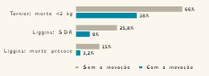
O fuzilamento. Em 28/10/1939, sob a ocupação nazista, estudantes de Praga protestaram no aniversário da independência da Tchecoslováquia. O estudante de medicina Jan Opletal foi baleado e morreu em 11/11. Seu enterro, em 15/11, virou manifestação. Em 17/11, as autoridades nazistas executaram nove estudantes e professores sem julgamento, mandaram mais de 1.200 alunos a campos de concentração e fecharam as universidades tchecas.
A data. Em 1941, em Londres, representantes de 14 países proclamaram o 17 de novembro Dia Internacional dos Estudantes. Na Grécia, a data também lembra o fim da ocupação estudantil da Politécnica de Atenas, em 1973, sob o regime militar.
Cinquenta anos depois. Em 17/11/1989, uma marcha autorizada para lembrar 1939 foi reprimida pela polícia em Praga. Os protestos que se seguiram, sem violência dos manifestantes, ficaram conhecidos como Revolução de Veludo e encerraram o regime de partido único em semanas. Desde 2000, a data é feriado tcheco: Dia da Luta pela Liberdade e pela Democracia.
Os arquivos. A StB, polícia política criada em 1945, guardava centenas de milhares de fichas. Logo após a revolução, agentes tentaram destruir documentos, nem sempre com sucesso, e o órgão foi extinto em janeiro de 1990. Em 2003, uma lei abriu ao público a lista oficial de cerca de 75 mil informantes. Historiadores tchecos ainda reconstroem pastas trituradas.
Opletal estudava medicina. No Brasil, o Arquivo Nacional mantém desde 2009 o centro Memórias Reveladas, com acervos de 1964 a 1985, e a Comissão Nacional da Verdade entregou seu relatório em 10/12/2014. Arquivo aberto é prova, não vingança: permite verificar, corrigir e reparar.
| 1869 | Canal de Suez é inaugurado |
| 1939 | Execuções em Praga |
| 1989 | Revolução de Veludo |
| Hoje | Prematuridade · Estudantes |
O nome veio da transição negociada e sem guerra. Em 1993, a Tchecoslováquia se dividiu em República Tcheca e Eslováquia, também sem conflito armado, no chamado "divórcio de veludo".
Estudante: do latim studere, "dedicar-se com zelo". Prematuro: de praematurus, "maduro antes do tempo". Arquivo: do grego archeion, a casa dos magistrados.
1. Quem foi Jan Opletal? 2. Em que ano a StB foi extinta? 3. Para quanto caiu a síndrome do desconforto no estudo de Liggins e Howie? Respostas: estudante de medicina baleado em 1939 · 1990 · de 25,8% para 9%.
✝️ Bíblia · Provérbios 9:9 e Lucas 6:40
"Instrui o sábio, e ele será mais sábio." · "Todo discípulo bem formado será como o seu mestre."
Reflexão: quem já sabe é o que mais aceita aprender. E o aluno espelha o mestre: o que você faz ensina mais que o que diz. Hoje: peça a alguém que revise um trabalho seu.
✡️ Torá · Deuteronômio 6:7
"Ensina-as a teus filhos e fala delas sentado em casa e andando pelo caminho."
Reflexão: ensinar não é evento, é rotina: em casa, no caminho, na hora de deitar. Repetição espaçada antes de ter nome. Hoje: explique em voz alta, em dois minutos, algo que estudou ontem.
📜 Talmude · Taanit 7a e Pirkei Avot 4:1 e 4:12
"Muito aprendi com meus mestres, mais com meus colegas e, com meus alunos, mais que com todos."
Reflexão: Ben Zomá diz que sábio é quem aprende com todas as pessoas, e Avot 4:12 pede que a honra do aluno seja cara como a sua. Hoje: pergunte ao mais novo da equipe o que ele faria.
☪️ Alcorão · Suratas 96:1–5 e 20:114
"Lê, em nome do teu Senhor, que ensinou pelo cálamo." · "Senhor, aumenta-me em conhecimento."
Reflexão: a tradição islâmica guarda que a primeira palavra revelada foi "Lê". Pedir mais saber é pedir com humildade. Hoje: leia dez minutos sem celular por perto.
☯️ Confúcio · Analectos 7:22 e 2:17
"Entre três que caminham, há um mestre para mim." · "Saber o que se sabe e o que não se sabe: isso é saber."
Reflexão: imite o bom, corrija em si o ruim. E admitir "não sei" é parte do conhecimento, não falha. Hoje: no plantão, diga "não sei, vou checar" uma vez, sem culpa.
☸️ Budismo · Kalama Sutta (AN 3.65) e Dhammapada 152
"Não aceite só porque é tradição ou porque o mestre disse." · "Quem pouco aprende envelhece como um boi."
Reflexão: o Buda pede exame: teste, observe o resultado, então aceite. O corpo cresce sozinho; a sabedoria, não. Hoje: confira a fonte de uma "verdade" que você repete.
| Ideia | Onde aparece |
|---|---|
| Aprender com todos | Pirkei Avot 4:1, Taanit 7a, Analectos 7:22 |
| Honrar quem ensina | Juramento de Hipócrates, Bhagavad Gita 4:34, Lc 6:40 |
| Honrar quem aprende | Pirkei Avot 4:12, Declaração de Genebra (2017) |
| Examinar antes de repetir | Kalama Sutta, Analectos 2:17, Pv 14:15 |
Que professor ou preceptor mudou o seu jeito de trabalhar? Se ele ainda puder ler, mande hoje uma mensagem de três linhas.
Mito: "aluno" não quer dizer "sem luz". Vem do latim alumnus, de alere, "nutrir": aluno é quem é alimentado pelo ensino.
| Texto | O que diz sobre mestres e alunos (tradução livre) | Situação |
|---|---|---|
| Juramento de Hipócrates | Considerar quem ensinou a arte igual aos próprios pais e ensiná-la aos filhos dele sem cobrar. | Séc. V–IV a.C.; autoria incerta |
| Declaração de Genebra | Dar a mestres, colegas e alunos o respeito e a gratidão devidos. | AMM, 1948; alunos incluídos em 2017 |
| "Oração de Maimônides" | Pede humildade para aprender todos os dias e não se julgar sábio demais. | Atribuída; provável autoria de Marcus Herz, 1783 |
| Código de Ética Médica | Capítulo VII: relação entre médicos, com respeito e solidariedade entre colegas. | Resolução CFM 2.217/2018 |
"Veja um, faça um, ensine um", lema atribuído à escola de Halsted, em Baltimore, no fim do século XIX, marcou a cirurgia. Hoje, a formação prefere simulação, supervisão graduada e checagem de competência antes de o aluno fazer sozinho no paciente.
Em 1847, em Viena, Ignaz Semmelweis mostrou que lavar as mãos com cal clorada derrubava as mortes por febre puerperal na sua enfermaria, de cerca de 18% para cerca de 2%. Muitos colegas rejeitaram a ideia, e ele morreu em 1865 sem reconhecimento. Honrar o colega é ouvir o dado novo antes de descartá-lo.
Antes de dormir: 1. O que aprendi hoje com alguém mais novo? 2. Que dúvida tirei sem vergonha? 3. A quem devo o que sei, e já agradeci?
🧠 Recuperação ativa: 1. Que tratado diz que sábio é quem aprende com todos? 2. Em que ano a Declaração de Genebra incluiu os alunos? 3. Quem provavelmente escreveu a "Oração de Maimônides"? Respostas: Pirkei Avot 4:1 · 2017 · Marcus Herz.
Perdão. Uma meta-análise com dezenas de estudos e mais de 2 mil participantes mostrou que intervenções estruturadas para perdoar aumentam o perdão e reduzem sintomas de depressão e ansiedade, e o efeito cresce com o tempo dedicado. Perdoar não é esquecer nem voltar a confiar: é largar a corda do ressentimento. Mateus 18:22 fala em perdoar "setenta vezes sete".
Generosidade. Num experimento clássico, quem recebeu dinheiro para gastar com outra pessoa terminou o dia mais feliz do que quem gastou consigo; o valor, 5 ou 20 dólares, pesou menos que o destino. Réplicas posteriores acharam efeito menor, mas na mesma direção. Pequenos atos de gentileza concentrados num dia da semana também elevaram o bem-estar em outro estudo.
Natureza. Num levantamento com cerca de 20 mil pessoas na Inglaterra, quem passava pelo menos 120 minutos por semana em praças, parques ou praias relatava mais saúde e bem-estar; o benefício valia mesmo quando o tempo era dividido em várias saídas. É associação, não prova de causa.
Caráter. Em 1881, o jangadeiro Francisco José do Nascimento, o Dragão do Mar, liderou a recusa dos jangadeiros de Fortaleza em levar pessoas escravizadas aos navios. O Ceará aboliu a escravidão em 25/3/1884, quatro anos antes da Lei Áurea. Carlos Chagas descreveu de uma vez o agente, o vetor e o quadro clínico da doença que leva seu nome (1909). A cearense Rachel de Queiroz foi, em 1977, a primeira mulher na Academia Brasileira de Letras.
| Perdão trabalhado reduz ansiedade | ✅ |
| Gastar com os outros alegra | 🟡 |
| 2 h por semana ao ar livre | 🟡 |
| Gentileza eleva o bem-estar | 🟡 |
| Sal grosso na porta "afasta inveja" | ✨ |
| Fitinha amarrada "realiza pedidos" | ✨ |
Pare · Aspire fundo três vezes · Reparar no que sente · Então responda. Mensagem difícil? Escreva, não envie, releia amanhã. Técnica de atenção plena; útil, sem estudo próprio de eficácia.
A dor intensa diante de crítica ou rejeição é comum no TDAH. Antes de concluir que "ficaram com raiva de você", procure uma segunda explicação e pergunte. 🟡 Tema frequente na ADDitude; ainda não é diagnóstico oficial.
Leitura cultural e simbólica: em teste duplo-cego (Nature, 1985), astrólogos não acertaram perfis acima do acaso. Use como lembrete de atitude, nunca como decisão.
Calor de novembro no sertão: água à vista ✅, protetor solar ✅, janela aberta cedo e cortina fechada à tarde 🟡, um vaso de manjericão na cozinha ✨. Para ele e para ela: algodão claro, sapato limpo e perfume leve. Discrição é elegância.
| Planta | Tradição ✨ | O que se sabe |
|---|---|---|
| Manjericão | Prosperidade | Tempero; aroma agradável |
| Girassol | Fé, lealdade | Jovem, segue o Sol (Science, 2016) |
| Babosa | Cura, proteção | Gel: evidência modesta em queimadura leve; ⚠️ tóxica a pets |
| Arruda | Contra mau-olhado | ⚠️ Seiva + sol queima a pele; não use como chá |
Plantas fazem bem ao humor e à rotina de cuidado; não substituem tratamento.
O Relógio agora usa o calendário e os feriados para oferecer pular alarmes em dia de folga. Plantão na sexta (20, Consciência Negra)? Confira se o alarme continua ligado.
Com a Apple Intelligence, escreva no Calendário algo como "reunião quinta 14h, sala 2": o evento é montado sozinho. Em Macs compatíveis.
Com a atualização de novembro, clique com o botão direito › "Personalizar menu" e esconda o que não usa. Shift + clique direito traz o menu antigo.
Onde o site oferecer "chave de acesso" (passkey), aceite: o login é por Face ID ou digital, não há senha para vazar e ela não funciona em site falso.
Use @media (prefers-reduced-motion: reduce) no CSS para desligar animações de quem ativou "Reduzir movimento". Ajuda quem tem TDAH, enxaqueca ou labirintite.
A IA ajuda no rascunho; o seu valor está na seleção, revisão e desenho. Em março, a Suprema Corte dos EUA manteve a exigência de autor humano; no Brasil, a Lei 9.610/98 protege a criação humana. Avise que usou IA, não use marcas alheias e não prometa resultado.
Tarefa chata? Faça ao lado de alguém, presencialmente ou por vídeo ("body doubling"). Muito citada pela ADDitude; a evidência formal ainda é pequena.
Semana curta, com feriado na sexta e Black Friday chegando: agenda conferida, compras só com lista e decisões grandes só depois de 72 horas.
Hoje, em 5 minutos: abra o Relógio, confira os alarmes até sexta e anote as três tarefas que não podem escapar.
Alarme de plantão pulado no feriado · comprar "porque está acabando" · responder irritado no WhatsApp · virar a noite vendo meteoros na véspera de plantão · pagar "taxa" para liberar dinheiro.
Jornal Diário 360 · Radar 360 Circunstancial · Ano I, nº 012 · fechamento em 17/11/2026, na madrugada. Produzido pelo Agente Editorial 360 com o Claude (Anthropic). Atualizações na p.2. Nesta edição de 30 páginas: esportes ampliados (p.12–15), educação financeira sem renda variável (p.20–21), tirinhas com personagens próprios (p.22–23), Arcanos (p.24–25), Honra 360 e Equilíbrio 360 (p.26–29), com traduções livres e referências para conferir. Em saúde, siga o protocolo institucional; em finanças e compras, não há recomendação nem comissão. Gráficos e ilustrações originais; nenhuma foto de terceiros. Texto em OpenDyslexic, fonte livre pensada para leitura com dislexia.